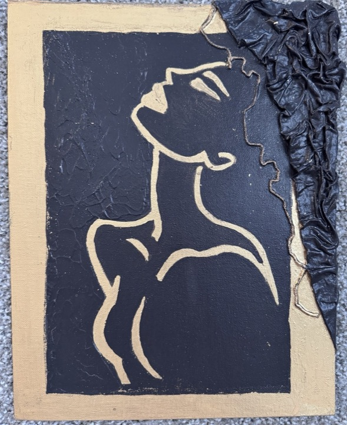
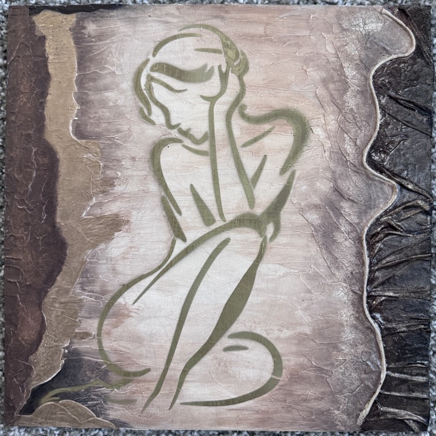

She
At the center of the series is a woman who decides for herself what matters in her life. She has the right to reject familiar social standards and listen to her heart. Sometimes change begins when she notices how much energy it takes to live a life she has outgrown. She can admit that she was wrong or allow herself to be a beginner again at something that excites her. From this understanding comes the possibility of changing at her own pace and looking at herself with curiosity and tenderness.
A woman can allow herself sensuality: the pleasure of touch, of seeing her own reflection, and of fulfilling her own desires. Gold and relief draw attention to the surface of the painting, but the woman's attention remains her own.

A Light Touch
The work looks at touch as a way of getting to know oneself. A woman may spend years judging her appearance from the imagined point of view of others, but touch is what brings back the silkiness of her hair, the warmth of her skin, and the courage to be herself.



A New Step
The work considers the difference between how a woman changes inwardly and how the people close to her see her changing. She is already different, but those around her may keep speaking to her as though she were still the woman they are used to. The painting holds on to the interval in which the old role is still recognizable but the new path is already beginning to shape her sense of herself.



Alone With Myself
The work is about how important it is to be able to get away from the whole world, be alone with yourself, and give free rein to dreams that usually have no shape, plan, or purpose. From moments like these, she comes to understand what she wants from her own life.